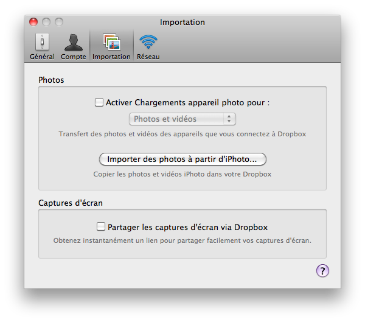
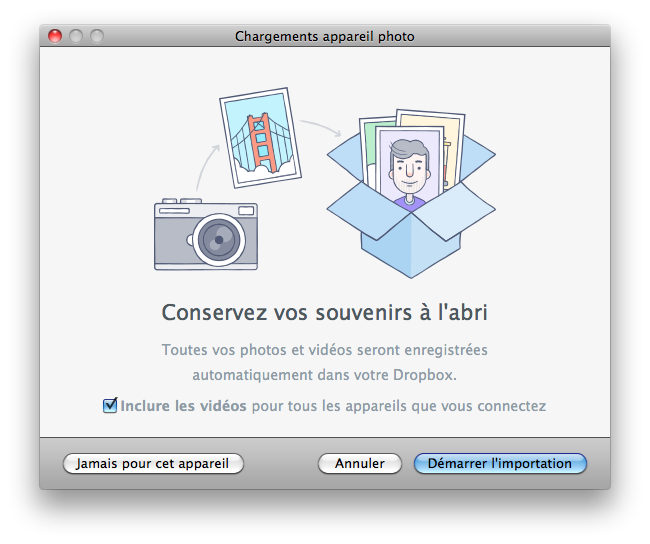

Importation Automatique des Appareils Photo Numériques
Pour désactiver l’importation automatique des appareils photo numériques vous devez aussi contrôler les réglages d’applications ou de services tierces comme Dropbox. Si vous ne le faites pas, alors ceux-ci peuvent interférer avec le contrôle de l’appareil numérique.
-
Par exemple avec Dropbox allez voir les réglages dans l’onglet Importation des préférences.

-
Vérifiez bien que le chargement des photos et vidéos est bien désactivé lors de la connexion d’un appareil numérique.
Autrement des applications seront lancées lors de la connexion d’un appareil numérique, bloquant le contrôle de Lunar Eclipse Maestro.
-
Lors de la connexion d’un appareil numérique Dropbox présente un dialogue pour démarrer l’importation des photos et vidéos. Il est conseillé de cliquer sur le bouton Jamais pour cet appareil afin d’éviter tout conflit potentiel.

|
En profiter pour lire aussi la détection automatique des appareils photo numériques.